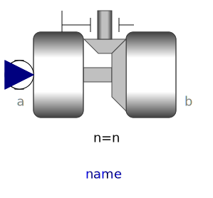
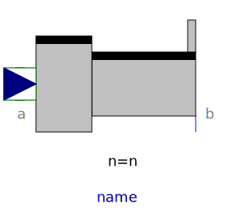
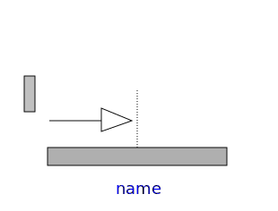
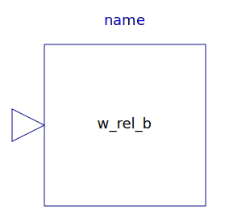

The models in this package should not be used by the user. They are designed to build up other models in the MultiBody library and some of them cannot be used in an arbitrary way and require particular knowledge how to set the options in the parameter menu. Don't use the models of this package.
| Name | Description |
|---|---|
|  RevoluteWithLengthConstraint | Revolute joint where the rotation angle is computed from a length constraint (1 degree-of-freedom, no potential state) |
|  PrismaticWithLengthConstraint | Prismatic joint where the translational distance is computed from a length constraint (1 degree-of-freedom, no potential state) |
|  RollingConstraintVerticalWheel | Rolling constraint for wheel that is always perpendicular to x-y plane |
| Internal model to initialize r_rel_a for Joints.FreeMotionScalarInit | |
| Internal model to initialize the angels for Joints.FreeMotionScalarInit | |
|  InitAngularVelocity | Internal model to initialize w_rel_b for Joints.FreeMotionScalarInit |